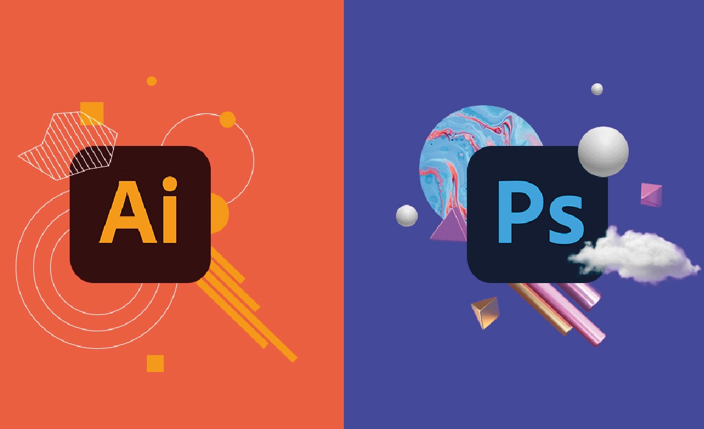

Submodulo 1:Páginas WEB  |
Desarrollo web con HTML y CSS. Durante la capacitación, aprendimos los fundamentos del desarrollo web utilizando HTML y CSS. Con HTML, comprendimos cómo estructurar el contenido de una página web mediante etiquetas, encabezados, listas, tablas, imágenes e hipervínculos. Luego, con CSS, aplicamos estilos para mejorar la apariencia visual de nuestras páginas, modificando colores, fuentes, márgenes, fondos y creando diseños más atractivos y profesionales. Esta experiencia nos permitió crear sitios web básicos completamente funcionales desde cero. |
| Submodulo 2:Diseño Digital  |
Durante la capacitación, aprendimos a utilizar Adobe Photoshop e Illustrator para el diseño digital. En Photoshop, exploramos herramientas básicas de edición de imágenes, como recorte, ajustes de color, capas y filtros. Con Illustrator, trabajamos en la creación de gráficos vectoriales, aprendiendo a diseñar logotipos, íconos y composiciones creativas. Estas herramientas nos permitieron desarrollar habilidades visuales aplicables en proyectos escolares, personales o profesionales. |